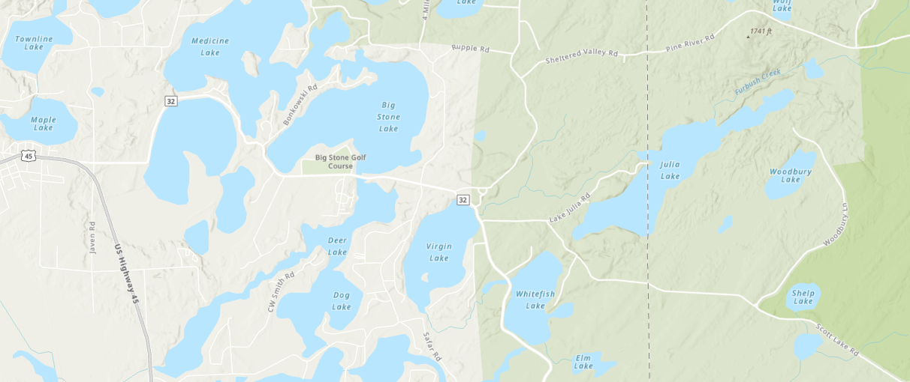
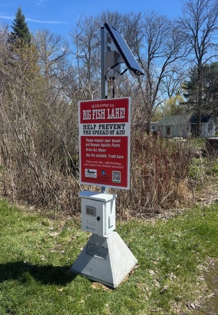

A solar-powered camera and audio system at the Lake Julia boat landing that automatically reminds boaters to Clean, Drain, and Dry.
Technology in Defense of the Lake
The Internet Landing Installed Device Sensor (I-LIDS) is a standalone, solar-powered camera and audio system developed by Lake Shield and designed specifically for boat landings. The Lake Julia Association's board has voted to install an I-LIDS unit at the public boat landing on Lake Julia as part of the Association's ongoing commitment to preventing aquatic invasive species.
The system works automatically: when motion is detected at the landing, the unit plays a pre-recorded audio message reminding boaters to Clean, Drain, and Dry their vessel before launching. This is the same core message our Clean Boats, Clean Waters monitors deliver in person. Simultaneously, the unit records high-resolution video of each launch event for future reference.
I-LIDS extends the reach of our monitoring program to hours and days when a paid or volunteer monitor is not present at the landing, providing a layer of AIS protection around the clock, throughout the season.

How It Works
The I-LIDS system works quietly in the background, educating boaters, capturing data, and extending protection without requiring constant human presence.
The I-LIDS system detects a vehicle and trailer approaching the boat launch and activates automatically, with no attendant required.
A pre-recorded audio reminder instructs boaters to inspect their vessel and trailer for weeds, drain all water, and dispose of bait, right at the point of use and at approximately 60 decibels (normal conversation level).
High-resolution video of the trailer and hull is recorded. The system also compiles time-stamped, remotely accessible launch statistics for the Association's records.
Launch reports give the Association evidence to guide on-site inspector deployment, identify peak use periods, and demonstrate stewardship to grant-making agencies.
Part of a Layered Defense
For years, the Clean Boats, Clean Waters program has been the Association's primary line of defense at the boat landing, and human monitors remain the most effective tool we have. A trained inspector can physically check a vessel, answer questions, and have a real conversation with a boater in a way no technology can replicate.
At the same time, the program faces a real and growing challenge: recruiting and retaining dedicated monitors season after season is difficult, and available coverage hours have declined. The Association does not take this lightly, and the long-term future of staffed monitoring at the landing is uncertain.
I-LIDS was adopted with this reality in mind. It is not a concession but a proactive investment in consistent, season-long (Apr-Nov) protection that does not depend on volunteer availability. Whether CBCW continues at full strength or must eventually scale back, the I-LIDS unit will be at the landing every morning, reminding every boater to Clean, Drain, and Dry.
Get Involved
Please reach out to CJ with any questions about the I-LIDS program, including the installation, timeline, or how to support it.
Email: cjkraft3@gmail.com
Phone: 262-888-3119
Resident donations fund both the Clean Boats, Clean Waters monitoring program and investments like I-LIDS that protect Lake Julia.